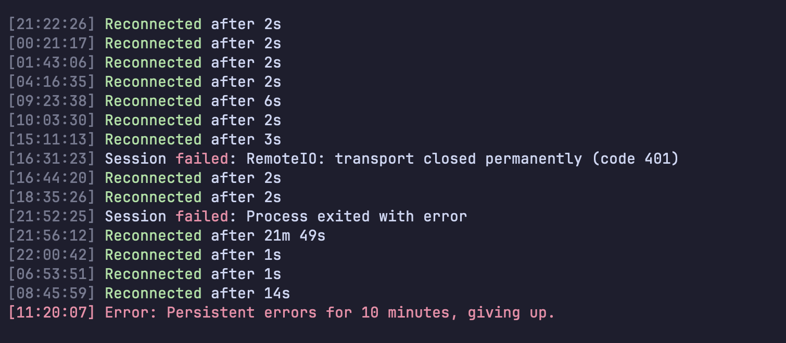

Claude Code · Remote Control · macOS
claude rc gives up after 10 minutes. launchd does not.
I leave claude rc running in a terminal on my Mac so I can start new Claude Code sessions from my phone. It ran for almost three days, reconnected itself thirteen times without me touching it, and then one morning it printed Persistent errors for 10 minutes, giving up. and quit. Nothing on the phone, nobody at the desk. There is no setting to make it keep trying. There is a small launchd file that does.

Two different Remote Controls
In part 1 I turned on remoteControlAtStartup: true, which connects every Claude Code session I open to claude.ai and the mobile app. That covers the sessions that already exist. It does not let me start a new session from the phone when nothing is open on the Mac.
That is what server mode is for: claude remote-control, or claude rc. It sits in a folder and waits. From the app you pick it and a fresh session spawns on your machine, in that folder, with your files, MCP servers and settings. It is the closest thing to a self-hosted Claude Code you can reach from anywhere.
What the docs say about giving up
The two modes handle a long outage differently, and the docs spell it out:
Server mode: Claude Code gives up after roughly 10 minutes and theclaude remote-controlprocess exits. Runclaude remote-controlagain to start a new session.
Interactive session: keep working locally. Claude Code retries for as long as the outage lasts and reconnects on its own when the network returns.
So the interactive sessions are fine. The server is designed to exit, and the documented fix is a human typing the command again. I went looking for a keep-alive flag in claude rc --help and the settings reference. There is none.
My log had one more failure in it worth knowing about: RemoteIO: transport closed permanently (code 401). That one killed a single spawned session, not the server, and the server kept going. The one that matters is the last line.
The fix: let macOS restart it
macOS already has a process supervisor. launchd's KeepAlive restarts a job whenever it exits, for any reason, and RunAtLoad starts it at login. claude rc runs fine without a terminal attached (I checked before relying on it), so it can run as a background job with no wrapper script.
Run this once. Change WorkingDirectory to the folder you want new sessions to start in. I use the parent folder of all my projects, so a session started from the phone can work in any of them.
cat > ~/Library/LaunchAgents/com.me.claude-rc.plist <<EOF
<?xml version="1.0" encoding="UTF-8"?>
<!DOCTYPE plist PUBLIC "-//Apple//DTD PLIST 1.0//EN" "http://www.apple.com/DTDs/PropertyList-1.0.dtd">
<plist version="1.0"><dict>
<key>Label</key><string>com.me.claude-rc</string>
<key>ProgramArguments</key><array>
<string>$HOME/.local/bin/claude</string><string>remote-control</string>
</array>
<key>WorkingDirectory</key><string>$HOME/Projects</string>
<key>EnvironmentVariables</key><dict>
<key>PATH</key><string>$HOME/.local/bin:/opt/homebrew/bin:/usr/local/bin:/usr/bin:/bin</string>
</dict>
<key>StandardInPath</key><string>/dev/null</string>
<key>StandardErrorPath</key><string>/tmp/claude-rc.err</string>
<key>RunAtLoad</key><true/>
<key>KeepAlive</key><true/>
<key>ThrottleInterval</key><integer>30</integer>
</dict></plist>
EOF
launchctl bootstrap gui/$(id -u) ~/Library/LaunchAgents/com.me.claude-rc.plistWhat each part is for:
ProgramArgumentsneeds the full path toclaude, because launchd does not read your shell profile. Check yours withwhich claude.PATHis set for the same reason, so the sessions it spawns can findgit,nodeand friends.StandardInPath /dev/nullbecause there is no keyboard. Stdout is left out on purpose:claude rcredraws its status every few seconds and would fill a log file for no reason. Errors still go to/tmp/claude-rc.err.ThrottleInterval 30waits 30 seconds between restarts, so a real outage costs one attempt every 30 seconds instead of a tight loop.
Check that it really comes back
Do not trust a config you have not watched fail. Kill the process and see launchd start a new one:
launchctl print gui/$(id -u)/com.me.claude-rc | grep -E "state|pid|runs"
# state = running runs = 1 pid = 94945
kill 94945; sleep 35
launchctl print gui/$(id -u)/com.me.claude-rc | grep -E "state|pid|runs"
# state = running runs = 2 pid = 96157New pid and runs = 2: launchd restarted it.
Things to know
- Close the terminal one. If you also run
claude rcby hand in the same folder, you get two servers. - One job per folder. Need a second folder? Copy the plist with a new
LabelandWorkingDirectory. I started by writing a wrapper script that looped over a list of folders, and launchd kept exiting it silently. One plist per folder has nothing to debug. - A restart is a new server. Sessions that were alive keep their history on claude.ai, but the server itself starts fresh. If a spawned session crashes, the docs say to send it a message from the app and the server serves it again (Claude Code v2.1.238 or later).
- Turning it off:
launchctl bootout gui/$(id -u)/com.me.claude-rc, then delete the plist so it does not come back at login. - Linux: not covered by the Remote Control docs, but a systemd user unit with
Restart=alwaysis the standard equivalent.
Want this set up across a team?
I set up Claude Code for teams and small businesses through ZaZet Solutions: remote access, skills, background jobs like this one, and the boring parts that keep it running when nobody is watching.